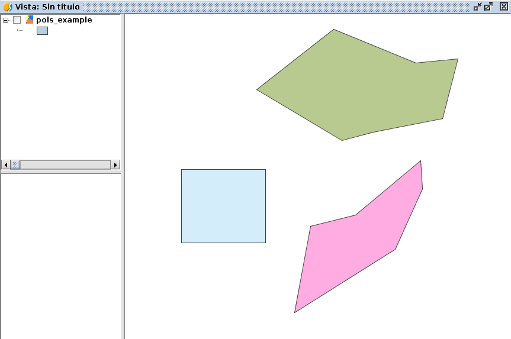

Leyendas¶
En capas vectoriales¶
Podemos crear y establecer leyendas a capas vectoriales.
Un ejemplo es la creación de una leyenda de intervalos para una capa de puntos:
# encoding: utf-8
from gvsig import *
from gvsig import geom
from java.awt import Color
from org.gvsig.symbology.fmap.mapcontext.rendering.legend.impl import VectorialIntervalLegend
def main(*args):
""" Create interval legend """
vil = VectorialIntervalLegend(geom.POINT)
vil.setStartColor(Color.red)
vil.setEndColor(Color.blue)
vil.setIntervalType(1)
store = currentLayer().getFeatureStore()
ii = vil.calculateIntervals(store, "size", 5, geom.POINT)
vil.setIntervals(ii)
currentLayer().setLegend(vil)
Podemos ver los diferentes parámetros que soporta VectorialIntervalLegend. Se establece un color de inicio y de final, un tipo de intervalo, y el número de intervalos que queremos.
Con 2 intervalos:

Con 5 intervalos:

Generando símbolos para capas vectoriales:
# encoding: utf-8
import gvsig
from java.awt import Color
from org.gvsig.fmap.mapcontext import MapContextLocator
def main(*args):
""" Legend: Creating points """
#p1 = gvsig.simplePointSymbol()
print gvsig.utils.COLORS
p1 = gvsig.simplePointSymbol("green")
p2 = gvsig.simplePointSymbol(gvsig.utils.COLORS["green"])
print "simplePointSymbol Green: ", p2
sp = MapContextLocator.getSymbolManager().getSymbolPreferences()
color = sp.getDefaultSymbolFillColor()
print "color: ", color
##
y = MapContextLocator.getSymbolManager()#.isDefaultSymbolFillColorAleatory()
v = MapContextLocator.getMapContextManager()
print "mapcontext: ",v
print "defaultSymbolFillColorAleatory: ", v.isDefaultSymbolFillColorAleatory()
xx = gvsig.getDefaultColor()
print "getDefaultColor: ", xx
yy = gvsig.simplePointSymbol()
print "simplePointSymbol: ", yy
zz = gvsig.simpleLineSymbol()
print "simpleLineSymbol: ", zz
uu = gvsig.simplePolygonSymbol()
print "simplePolygonSymbol: ", uu
Capa de Graphics Layer¶
Ejemplo para crear una capa de graphicslayer, esta capa se situa por encima del resto en nuestra Vista:
# encoding: utf-8
from gvsig import *
from gvsig.geom import *
import random
def main(*args):
vista=currentView()
gp = vista.getGraphicsLayer()
gp.removeGraphics("ejemplo")
features = currentLayer().features()
for feature in features:
pol = feature.geometry()
r = lambda: random.randint(0, 255)
color = getColorFromRGB(r(), r(), r() ,r())
polSymbol = simplePolygonSymbol(color)
idPolSymbol = gp.addSymbol(polSymbol)
gp.addGraphic("ejemplo", pol, idPolSymbol, "Label")
